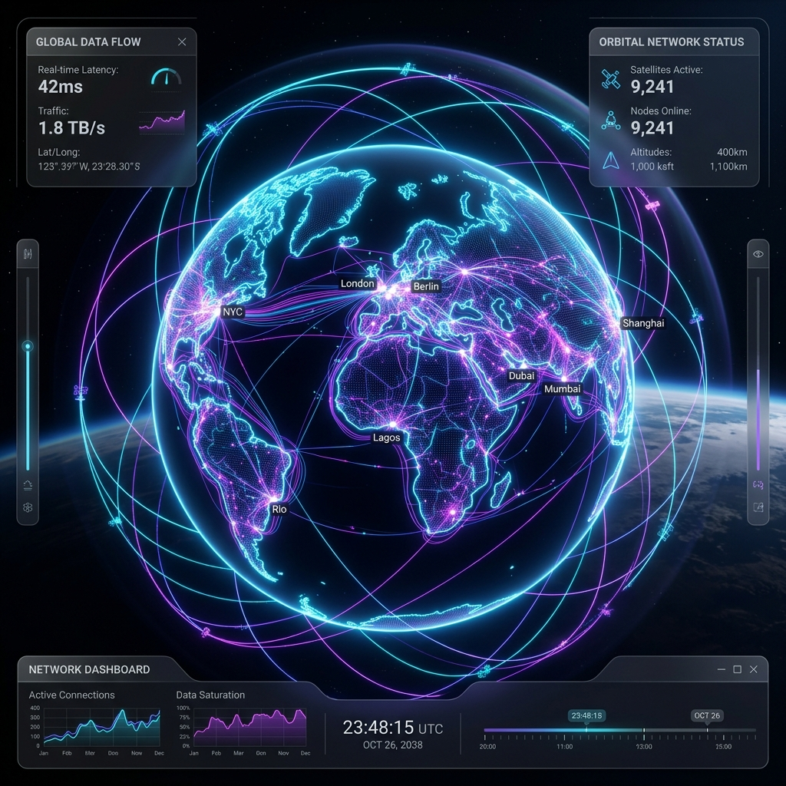

Telemetry Pipeline
The lifecycle of an intelligence query, visualized via the internal logic circuit.
1. Target Input
User inputs a directive into the compiled Flutter desktop dashboard.
2. AI Orchestration
Python LLM Agents translate text into exact coordinate bounding boxes.
3. Data Synthesis
Raw satellite telemetry is fetched and mathematically processed instantly.
4. Map Rendering
Intelligence buffers are streamed directly back via TCP to the visual map.
Global Telemetry Array

Once processed, data is projected globally across the Orbit Network. Analysts deploy these nodes across various hemispheres to conduct multi-spectral cloud masking and vegetation indexing without any prior coordinate knowledge.